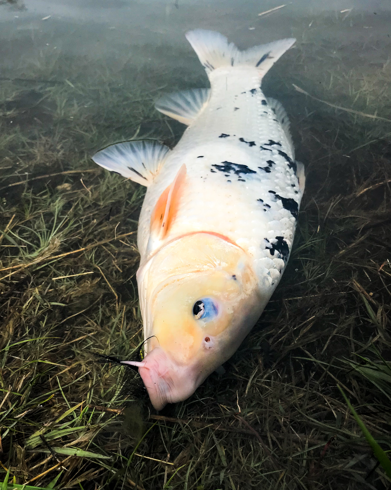
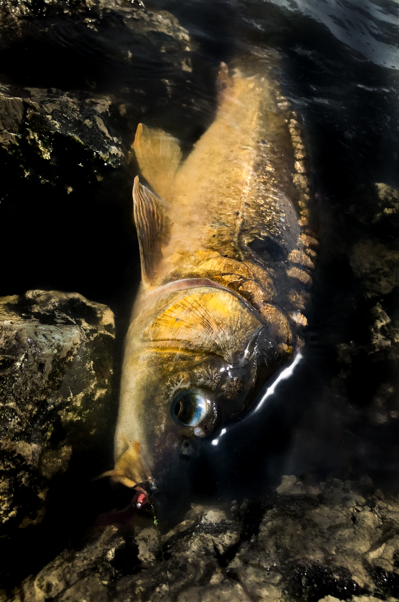
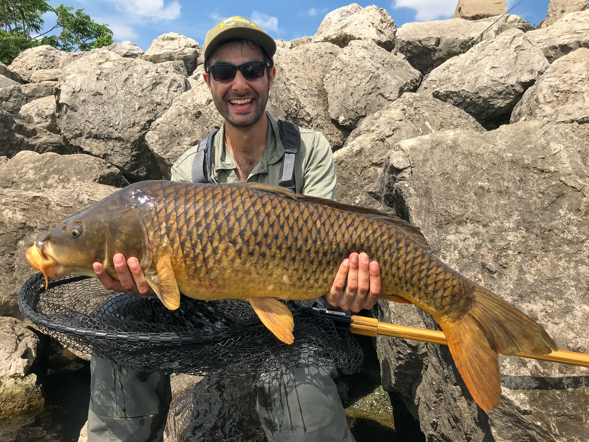
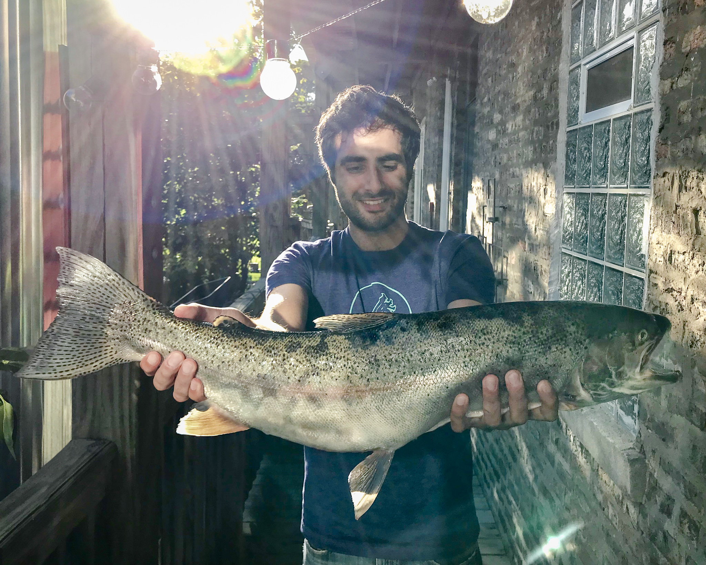

Koi
About Koi
Koi are colored varieties of the Amur carp (Cyprinus rubrofuscus) and were first selectively bred for their color mutations in China.
I had been wanting to catch more species of carp specifically a big koi for a while. Whilst on a mission of taking the girlfriend into nature (aka scouting new water), I stumbled across a resident population of big koi in a park lake in Chicago. No one there was targeting the koi so I decided someone needed to put the beatdown on them. It didn't take long before I had one on shore thanks to a black woolybugger!

Mirror Carp
About Mirror Carp
Mirror Carp result from a genetic mutation of the Common Carp. The name "mirror carp" originates from their scales' resemblance to mirrors. These fish were also selectively bred in ancient aquaculture because they were easier to scale.
On a recent solo scouting mission I decided to explore a small creek near O'Hare Airport. The water was high and muddy but the carp were pushed up right on the bank. I made a bad cast and spooked the fish initially but it came back a few minutes later and I connected. An unbelievably beautiful looking fish- one of the two carp I've ever seen with blue eyes.

Big Common Carp
About Common Carp
Common Carp are the third most introduced fish species in the world. They are native to Europe and were introduced to the US in 1816 by the government as a food fish. Eating them never really caught on and now they are considered pests.
Sometimes when things have you down you just need a little retail or fish therapy. In such a huge lake like Lake MI, finding a fish concentrator is key. I went with a buddy down to this dirty little spot and we caught a few quality carp in the 12-20 lb range but this one was the kicker for me. After it lazily ate my fly it took a blazing run far into the lake- my reel was screaming. Luckily we landed it in about 10 minutes! It ended up being my biggest ever carp coming in at a whopping 37" and estimated to be between 25-30 lbs. What a beast!

Stockers From Montgomery Res
About Rainbow Trout
The rainbow trout is a trout and species of salmonid native to cold-water tributaries of the Pacific Ocean in Asia and North America. They are often stocked for food or sport and raising them is one of the largest fish aquaculture industries in the US.
The fish are dumb, they're stacked in one spot, and there's no one else around. Things get weird sometimes at Montgomery. This is making me crave a fish fry!

Great Lakes "Steelhead"
About Great Lakes "Steelhead"
Steelhead are anadromous (meaning they migrate from the ocean into freshwater to spawn) rainbow trout. In the Great Lakes they are stocked and migrate from the "ocean" (The Great Lakes) to freshwater (tributaries) to spawn. Though not a true steelhead by the scientific definition they have much of the same characteristics.
Salmon and Steelhead season was tough. I put in close to two weeks of sessions trying to bag a Chinook or Coho in Chicago. The fishery I'm told is in decline- in those sessions I saw only 2 fish of any species caught. On my last day of fishing I decided to go full send and drive north an hour to try and escape the pressured waters of the Chicago area. After an all day and night session I caught this 30" steelhead at approximately 2 AM and called it a year. Exhausting stuff don't think I'll be trying again this year.